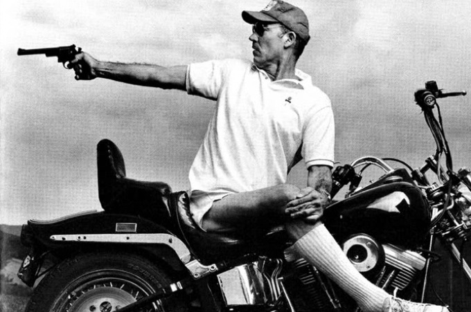

Football Season Is Over
No More Games. No More Bombs. No More Walking. No More Fun. No More Swimming. 67. That is 17 years past 50. 17 more than I needed or wanted. Boring. I am always bitchy. No Fun – for anybody. 67. You are getting Greedy. Act your old age. Relax – This won’t hurt.
Hunter S. Thompson was an American journalist and author, and the founder of the gonzo journalism movement. Born in Louisville, Kentucky, to a middle-class family, Thompson had a turbulent youth after the death of his father left the family in poverty. He was unable to formally finish high school as he was incarcerated for 60 days after abetting a robbery. He subsequently joined the United States Air Force before moving into journalism. He traveled frequently, including stints in California, Puerto Rico, and Brazil, before settling in Aspen, Colorado, in the early 1960s.
The Battle of the Aspen[link]
In 1970, Thompson ran for sheriff of Pitkin County, Colorado, as part of a group of citizens running for local offices on the "Freak Power" ticket. The platform included promoting the decriminalization of drugs (for personal use only, not trafficking, as he disapproved of profiteering), tearing up the streets and turning them into grassy pedestrian malls, banning any building so tall as to obscure the view of the mountains, and renaming Aspen "Fat City" to deter investors. Thompson, having shaved his head, referred to the crew cut-wearing Republican candidate as "my long-haired opponent." With polls showing him with a slight lead in a three-way race, Thompson appeared at Rolling Stone magazine headquarters in San Francisco with a six-pack of
beer in hand, and declared to editor Jann Wenner that he was about to be elected Sheriff of Aspen, Colorado, and wished to write about the "Freak Power" movement. Thus, Thompson's first article in Rolling Stone was published as The Battle of Aspen with the byline "By: Dr. Hunter S. Thompson (Candidate for Sheriff)." Despite the publicity, Thompson narrowly lost the election. While carrying the city of Aspen, he garnered only 44% of the county-wide vote in what had become a two-way race. The Republican candidate agreed to withdraw a few days before the election in order to consolidate the anti-Thompson votes, in return for the Democrats withdrawing their candidate for county commissioner. Thompson later remarked that the Rolling Stone article mobilized his opposition far more than his supporters.
Birth of Gonzo[link]
Also in 1970, Thompson wrote an article entitled The Kentucky Derby Is Decadent and Depraved for the short-lived new journalism magazine Scanlan's Monthly. Although it was not widely read, the article was the first to use the techniques of Gonzo journalism, a style Thompson would later employ in almost every literary endeavor. The manic first-person subjectivity of the story was reportedly the result of sheer desperation; he was facing a looming deadline and started sending the magazine pages ripped out of his notebook. Ralph Steadman, who would collaborate with Thompson on several more projects, contributed expressionist pen-and-ink illustrations.
The first use of the word "Gonzo" to describe Thompson's work is credited to the journalist Bill Cardoso. Cardoso first met Thompson on a bus full of journalists covering the 1968 New Hampshire primary. In 1970, Cardoso (who was then the editor of The Boston Globe Sunday Magazine) wrote to Thompson praising the Kentucky Derby piece as a breakthrough: "This is it, this is pure Gonzo. If this is a start, keep rolling." According to Steadman, Thompson took to the word right away and said, "Okay, that's what I do. Gonzo." Thompson's first published use of the word appears in Fear and Loathing in Las Vegas: "Free Enterprise. The American Dream. Horatio Alger gone mad on drugs in Las Vegas. Do it now: pure Gonzo journalism."
Fear and Loathing in Las Vegas[link]
The book for which Thompson gained most of his fame had its genesis during the research for Strange Rumblings in Aztlan, an exposé for Rolling Stone on the 1970 killing of the Mexican-American television journalist Rubén Salazar. Salazar had been shot in the head at close range with a tear gas canister fired by officers of the Los Angeles County Sheriff's Department during the National Chicano Moratorium March against the Vietnam War. One of Thompson's sources for the story was Oscar Zeta Acosta, a prominent Mexican-American activist and attorney. Finding it difficult to talk in the racially tense atmosphere of Los Angeles, Thompson and Acosta decided to travel to Las Vegas, and take advantage of an assignment by Sports Illustrated to write a 250-word photograph caption on the Mint 400 motorcycle race held there. That was to be a short caption quickly grew into something else entirely. Thompson first submitted to Sports Illustrated a manuscript of 2,500 words, which was, as he later wrote, "aggressively rejected." Rolling Stone publisher Jann Wenner was said to have liked "the first 20 or so jangled pages enough to take it seriously on its own terms and tentatively scheduled it for publication — which gave me the push I needed to keep working on it", Thompson later wrote.
The result of the trip to Las Vegas became the 1972 book Fear and Loathing in Las Vegas, which first appeared in the November 1971 issues of Rolling Stone as a two-part series. It is written as a first-person account by a journalist named Raoul Duke on a trip to Las Vegas with Dr. Gonzo, his "300-pound Samoan attorney", to cover a narcotics officers' convention and the "fabulous Mint 400". During the trip, Duke and his companion (always referred to as "my attorney") become sidetracked by a search for the American Dream, with "two bags of grass, seventy-five pellets of mescaline, five sheets of high-powered blotter acid, a salt shaker half full of cocaine, and a whole galaxy of multi-colored uppers, downers, screamers, laughers ... and also a quart of tequila, a quart of rum, a case of Budweiser, a pint of raw ether, and two dozen amyls." Coming to terms with the failure of the 1960s countercultural movement is a major theme of the novel, and the book was greeted with considerable critical acclaim, including being heralded by The New York Times as "by far the best book yet written on the decade of dope". "The Vegas Book", as Thompson referred to it, was a mainstream success and introduced his Gonzo journalism techniques to a wide public.
You can read more about this great american author on wikipedia.